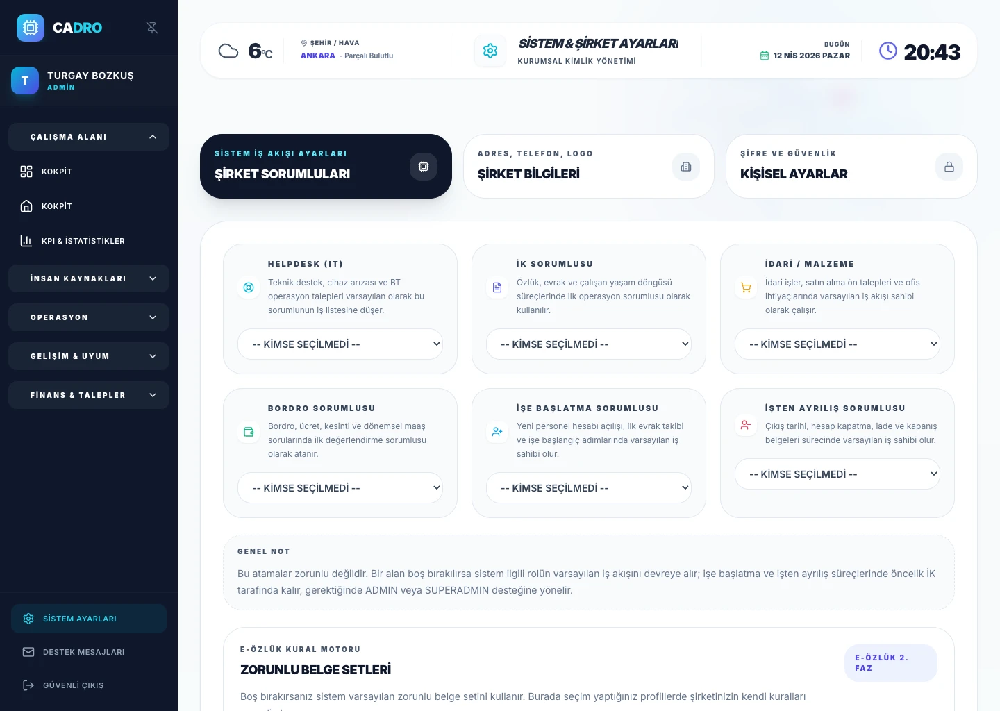

KVKK reference
For employee data processing processes, review the Turkish DPA’s data controller guide. It is not claimed that CADRO makes a specific policy KVKK-compliant by default.

SECURITY AND ACCESS
Review password preferences, activity history and company settings as shown in the current interface. Evaluate encryption, storage, and authentication details through technical documentation.
Request security documentation
These screens show password preferences and activity history; they do not prove a specific encryption algorithm, certificate, server location, or second-factor authentication.
For employee data processing processes, review the Turkish DPA’s data controller guide. It is not claimed that CADRO makes a specific policy KVKK-compliant by default.
ISO’s official overview provides an evaluation framework for security management systems. This reference does not certify CADRO or its infrastructure tests.
CURRENT UI SCREENS
Password renewal and security settings are visible in the user screen. Additional authentication options must be confirmed through the current product scope.
Account activities are displayed in the interface. Retention periods and export permissions should be reviewed through technical documentation.
Administration screens show company information and access configuration. Role permissions should be tested in your own environment.
ADMINISTRATIVE SETTINGS
Screens showing company, network and access options help you understand configuration needs. They are not a security certification or compliance guarantee.
Explore compliance configuration →
The user security screen shows password preferences and activity history. Verify additional protection options in your account or during a demo.
No. Interface records provide operational visibility; compliance must be assessed together with your purpose, access, retention and deletion policies.
Request current technical documentation and scope from info@cadro.io. Page diagrams or standard references alone are not sufficient proof.